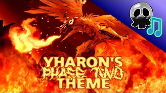
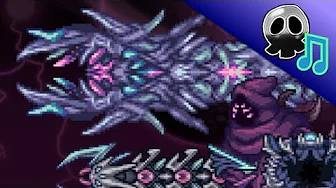
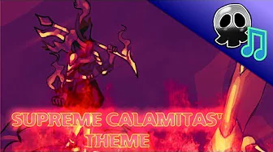

Omar C. (Known as DM Dokuro online) is a self taught electronic musician mainly known for his work on the Terraria Calamity mod. Born in Greenfield, Massachusetts he is 30 years old (born in 1992). He was the one that sculpted my current day taste in music.
| Most viewed videos on youtube: | |||
| Name: | Views: | Likes: | Thumbnail: |
|---|---|---|---|
| Roar of the Jungle Dragon | 13 Million | 132 Thousand |  |
| Devourer of Gods (Nonstop Mix) | 11 Million | 105 Thousand |  |
| Stained, Brutal Calamity | 8.5 Million | 77 Thousand |  |
While it has already showed up here, my favorite song of DM Dokuro, which has also been my favorite song in general since 2018. Is Devourer of Gods (Nonstop Mix)
My second favorite song of his has not appeared in this page yet, however it is titled "Catastrophes before the calamity"
and finally, my third favorite song made by DM Dokuro is titled "Feral Amalgamation"